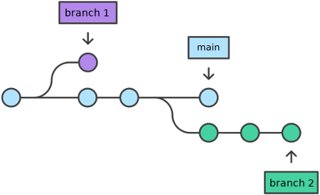
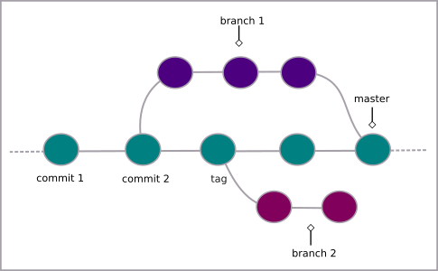
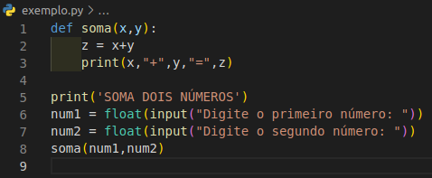
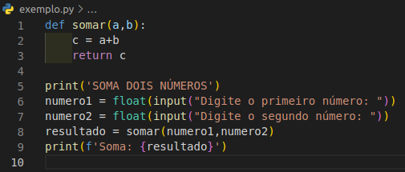

De maneira simplificada, os ramos (branches) no Git são semelhantes a um ramo de uma árvore, onde o tronco seria a base do código. Desse modo é possível criar diversos ramos e fazer alterações, enquanto a base permanece intacta. Por padrão o ramo principal é denominado de main (master, na versão antiga).
O novo ramo herda todos os commits do ramo anterior (onde ele foi criado).
Criando branch
Para criar um branch, digite
$ git branch <nome_do_ramo>
- $ indica que você deve usar o usuário comum para fazer essa operação.
- escolha um nome para o seu ramo sem os sinais < >.
Para ir até o branch criado
$ git checkout <nome_do_ramo>
Para usar um atalho para esses dois comandos acima (criar o novo ramo e ser imediatamente transferida para ele)
$ git checkout -b <nome_do_ramo>
Desse modo o branch será criado e em seguida irá transferir você para lá.
Listar branch
Para listar todos os branches, usa-se o comando:
$ git branch -a
Para saber em qual branch você está, digite:
$ git branch
Excluindo branch
Para excluir um branch, digite
$ git branch -d <nome_do_ramo>
Excluindo branch remoto
$ git push origin --delete <nome_do_ramo>
Unindo branch
Para unir todas as modificações que foram feitas em diferentes branches, ao ramo principal do projeto, digite
$ git checkout main
para ir até o branch principal ou
$ git checkout <nome_do_ramo>
para ir até o branch de destino das alterações.
Então digite
$ git merge <nome_do_ramo_onde_as_alterações_foram_feitas>
O fluxo dos branches será algo como a figura abaixo (unindo branch 1 a main).
Para visualizar os commits de merge:
$ git log --merges
Resolvendo conflitos ao unir os ramos no git
Exemplo:
Supondo que temos um arquivo na branch main com o seguinte código
E o mesmo arquivo na branch teste, com o código:
Ao tentar fazer o merge o git anunciará o conflito:
Mesclagem automática de <arquivo>
CONFLITO (conteúdo): conflito de mesclagem em <arquivo>
Automatic merge failed; fix conflicts and then commit the result.
Desse modo, é preciso primeiro resolver a situação conflitante (escolhendo as partes do código que deseja manter) e em seguida fazer o commit. Só após isso a união dos branches (ramos) será concluída.
Caso deseje desfazer esse processo, digite:
$ git merge --abort